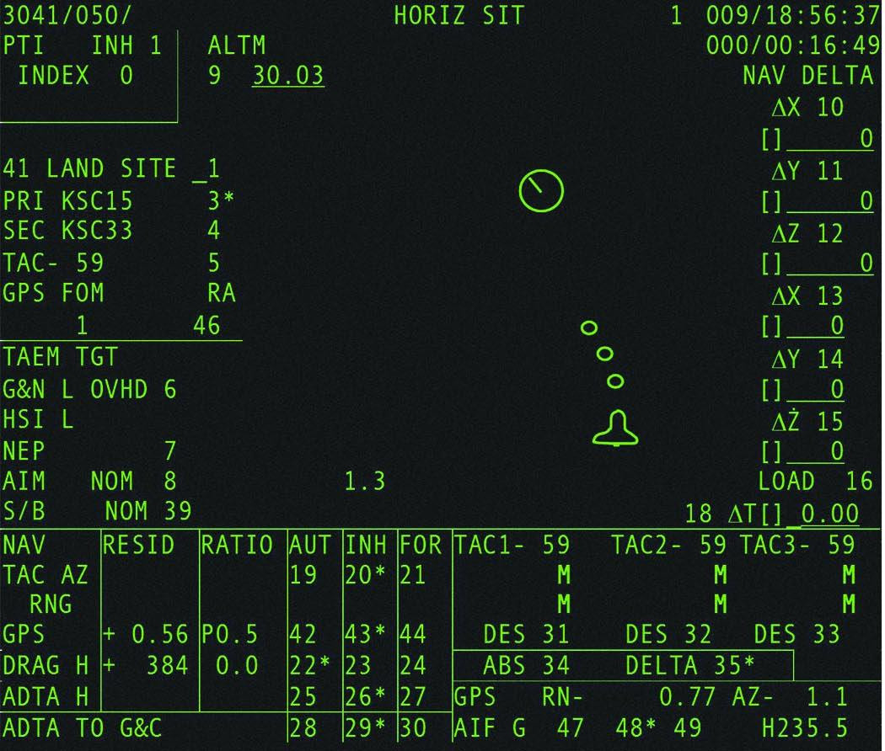
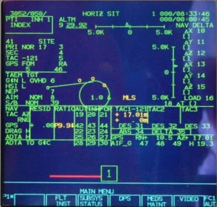
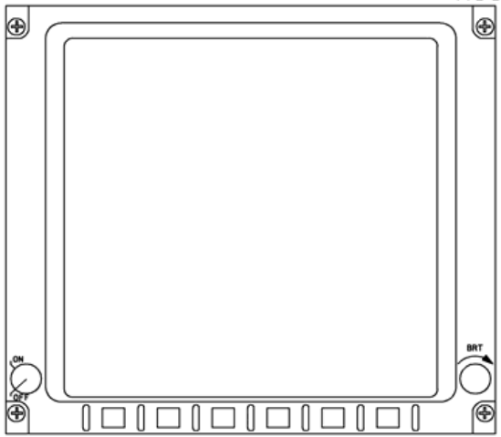
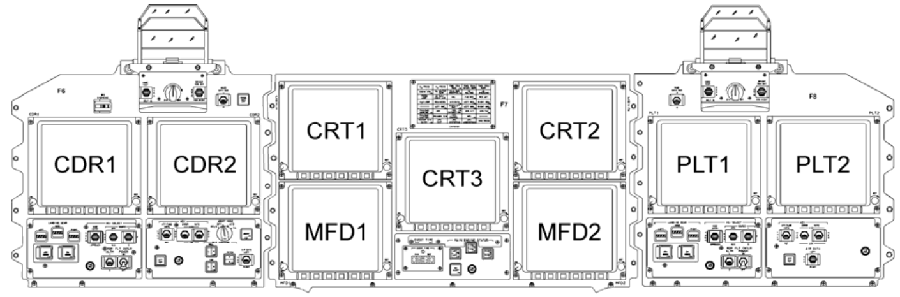
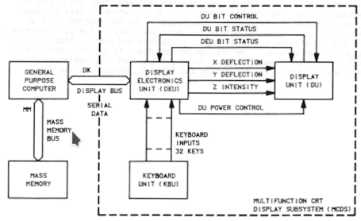
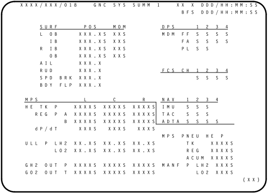
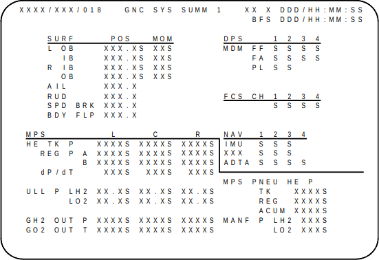

(This page is under construction.)
Table of Contents
Introduction
Insofar as the Space Shuttle is concerned, the Virtual AGC
Project's present goals — or if you'd prefer, my goals —
at present are the following:
- To provide the complete source code for the software for the
most-significant of its onboard computer systems, to the extent
allowed by U.S. law.
- To provide all of the official documentation needed to
understand that software and to work with it. See the References.
- To provide development tools suitable for working with the
software source code, and in particular for compiling/assembling
it into executable form.
- To provide an emulator suitable for running that executable
code.
- For the emulator to be integrated into space-flight simulation
systems such as Orbiter+SSU or FlightGear.
In essence, we'd like to do the same kinds of things for the
Space Shuttle's onboard computers, and in particular the
computers' software, as we have done for Apollo's onboard computer
systems and software.
In particular, we don't pretend to be putting together an
"everything about the Space Shuttle" site. If you want to
know about the Space Shuttle's Main Engines (SSME) or Reaction
Control System (RCS), or hear marvelous facts such as the maximum
payload size being a 15×60 foot cylinder weighing 65,000 pounds,
then this is not the place to look. (But that's big,
isn't it? I never knew.)
Now, there are various nuances to the statements above, such as
whether access to source code must be restricted in some ways,
rather than being freely available. And by "the" source
code, do I mean all revisions? Do I mean for all
components of the system? And by "the" development tools, do
I mean the original ones, or do I mean partial work-alikes?
And by emulation, do I mean emulation of the entire stack of code,
or just for some restricted portion of it? And besides
which, how do I really know which documents may be relevant to
these matters and which may be completely irrelevant?
For example, although I explicitly said above that this isn't
the site to come to if you want to learn about engines (SSME), the
engines were in fact controlled by a dedicated controller
containing two redundant Honeywell
HDC-601 digital computers ... so shouldn't those computers
and their software be covered here?
Answers to those questions will become clear in the sections
below ... or at least, clearer than they are now. There are
a lot of gray areas. And I don't pretend to know all of the
answers yet, so we may need to await future events to have
a more-complete picture. But there aren't necessarily
unique, permanently-correct answers anyway. One thing I can
say unequivocally is that integration into space-flight simulation
systems is my hope rather than anything that I'll actively
pursue; integration is the prerogative of the developers of those
space-flight simulators, rather than mine, if they feel it's
worthwhile for them.
My explanation of the Shuttle's computer system here will by
necessity be rather limited. The system is simply too
complex, and there are too many resources already available on the
web for me to suppose that a presentation by a johnny-come-lately
like me would be worthwhile or even interesting about a topic this
big. Perhaps the best place to get a general introduction
would be Chapter
4, "Computers in the Space Shuttle Avionics System", of James
Tomayko's Computers in Spaceflight: The NASA Experience,
but there are numerous other documents in our Shuttle
Library to provide more detail.
With that said, here's a brief synopsis. As with any
engineering system of substantial complexity, prepare to descend
into acronym hell!
The portion of the Shuttle's full avionics system which primarily
concerns us is the Data Process System (DPS), which
includes the General Purpose Computers (GPC), the crew
interface (display and keyboards), the mass-memory units, and the
data-bus network interconnecting all of them. Here's a
diagram, swiped from the afore-mentioned Computers in
Spaceflight, that gives a very high-level view of the system
architecture:

As you can see, there were five separate GPCs. Each of the
GPCs was an AP-101S computer, designed and manufactured by IBM's
Federal Services Division (as were the Apollo LVDC or Gemini
OBC, though the GPC was not similar to them). Although I
may not talk about the AP-101S much, it's worth mentioning that
it was a kind of embedded version of the IBM System/360
mainframe, in that it shared roughly the same assembly language,
known as
Basic Assembly Language (BAL).
Four of the GPCs nominally redundantly ran
identical
software, known as the
Primary Flight Software (PFS)
atop the
Flight Control Operating System (FCOS).
PFS and FCOS together are collectively referred to as the
Primary
Avionics Software Subsystem (PASS). The behaviors of
these four copies of FCOS were synchronized ... not on a
CPU-cycle by CPU-cycle basis, but to the extent that inputs to
the GPCs from the spacecraft, as well as commands output from
the GPCs to the spacecraft, occurred at the same time. In
particular, the fact that outputs from the GPCs were
synchronized allowed detection if one of the GPCs was behaving
abnormally. I say they did this "nominally", because this
extreme level of redundancy was warranted only during critical
flight phases ... in particular, during ascent and
reentry. During the more-leisurely phases of the mission,
if additional computing power was needed, the four principal
GPCs did not necessarily need to run identical, redundant
software.
The fifth GPC instead ran the
Backup Flight Software (BFS),
created entirely separately from PASS in a clean-room
fashion. This fifth GPC served roughly the same purpose in
the Shuttle as the Abort Guidance System (AGS) did in the Apollo
LM. BFS was specialized for abort functionality, i.e.,
reentry in the absence of a reliable set of GPCs running
PASS. And as I said above, this capability was really
needed only during ascent or reentry.
Besides these, there was a
Run Time Library (RTL) that
provided various common functions needed by PASS / BFS, such as
square roots, trigonometric functions, and so forth, though the
compiler embedded RTL code directly in the executable, so it
doesn't seem to have existed as a separate entity.
The data buses interconnecting the GPCs and peripheral devices
were MIL-STD-1553 buses.
The crew-interface devices included:
- 26 line by 51 character displays, capable also of
displaying some graphics. Prior to about the year
2000, the pilots had 3 of these displays and the crew
specialist had 1; they were monochrome (green text on black
background) cathode-ray tubes (CRTs). After 2000, the
CRTs were replaced by multi-color liquid crystal displays
(LCDs), 9 for the pilots and 2 elsewhere.
Collectively, the CRTs and LCDs were referred to as Multifunction
Display Units (MDUs).
- Keyboards. The pilots had 2 of these, and the
mission specialist station had a 3rd.
The pre-2000 configuration was known collectively as the Multifunction
CRT Display System (MCDS), while the post-2000
configuration was known as the Multifunction Electronic
Display Subsystem (MEDS).
In the diagrams below, the pre-2000 configuration is shown on
the left, while the post-2000 configuration is shown on the
right. Notice that the LCD-based displays (on the right)
have 6 buttons along the bottom edges that the CRTs (on the
left) lack, as well as being taller relative to their
width. The LCDs continued to display 51×26 textual
characters, just as the CRTs had, but the text was scrunched
into the upper part of the screen, while a strip along the
bottom of the LCD could display additional stuff that the CRTs
hadn't been able to, such as menu options selectable by the
edge buttons. These differences were transparent to the
PASS / BFS flight software, because the additional stuff
displayed along the bottom was not controlled by the PASS /
BFS software. In contrast, keyboards were the same in
type and number throughout the duration of the Shuttle
program.
 
Older configuration: 4 CRT displays
(Multifunction CRT Display System, or MCDS)
|



Newer configuration: 11 LCD displays
(Multifunction Electronic Display Subsystem, or
MEDS)
|
There's a more-inclusive diagram below (click to
enlarge) of the entire
older configuration of the
avionics system, if you feel the need for one. Personally,
I'm just including it because it's colorful, and you'll need to
dig into the actual documentation if you want real detail.
By the way, you can tell it's the older configuration (MCDS)
rather than the newer one (MEDS), because if you look in the
upper-left area, you'll see "CRT 1", "CRT 2", "CRT 3", and
(somewhat below the others) "CRT 4", rather than the 11 MFDs
you'd see in the newer configuration:
Below, on the other hand, is an extremely-informative diagram of
display-system interconnections that specifically for the newer
MEDS configuration. Don't be confused by the fact that
some of the LCDs are designated by names like "CRT
N",
because they're
not CRTs; they're just legacy names!
Like the AGC, AGS, and LVDC, which are programmed essentially in
the assembly language native to their CPU types, the Flight
Control Operating System (FCOS) and the Run Time Library (RTL)
are written in BAL, the assembly language of the AP-101S
CPU. But once you get past those infrastructural software
components, you have the Primary Flight Software (PFS), and the
PFS is written in a higher-level language called HAL/S, as is
the BFS.
The DPS
Overview Workbook explains the overall structure of the
PFS better than I can:
"PASS software consists of two types of software:
system software and application software. System software runs
the GPC. It is responsible for tasks such as GPC–to–GPC
communication, loading software from MMUs, and timekeeping
activities. Application software is software that runs the
orbiter. This includes software that calculates orbiter
trajectories and maneuvers, monitors various orbiter systems
(such as power, communications, and life support), and
supports mission–specific payload operations. The application
software is divided into broad functional areas called major
functions; in turn, each major function consists of
Operational Sequences (OPS), which are loaded into the GPCs
for each major phase of flight.
"Finally, each OPS has one or more Major Modes (MMs) that
address individual events or subphases of the flight."
References
All documents I can find that I feel are relevant to discussion
of the Space Shuttle's onboard computer systems and their software
have been collected on our Space Shuttle Library page.
That should be your first stop in a documentation
pilgrimage! However, here are some websites that have
additional documents that you may find interesting, and which may
still contain relevant materials that I've overlooked:
PASS, BFS, and Other Shuttle Source Code
I have become aware of private individuals with copies of what I
think may be the complete final revision of PASS and BFS.
This is remarkable, given that a former developer of Shuttle
software has told me that:
"When NASA shut down the Space Shuttle project, they erased all
of the backup storage media — since there WAS NO REQUIREMENT for
saving source code! Most of the HAL/S compiler and related
tools (like ... other support software were not saved), but all
of the HAL/S-based flight code was preserved."
I will keep the editorial comments I'm tempted to make to
myself. As an aside, I'll also comment that fortunately the
source code of the original HAL/S compiler was saved after
all, though by individuals rather than by any of the
organizational actors involved. Shame on you, organizational
actors!
At any rate, here is a list Shuttle-era software source code
currently available to us, or that we hope to make available
(potentially subject to ITAR restrictions on portions of it) at
some point in the future:
- HAL/S-FC — the original HAL/S compiler. Our software
repository currently has only
partial source code for release 32V0". Here
are some admittedly-poor hints for dissecting that source code:
- The top-level program for any given phase of the compiler is
generally the one called "##DRIVER.xpl".
- The structure of the compiler program to one or another
level of detail is documented in:
- The HAL/S compiler was based on the "Translator Writing
System" (TWS), which is basically a compiler (XCOM) and other
utilities for the XPL language, described in great detail in
the book A Compiler Generator by McKeeman, Horning,
and Wortman. Moreover, the HAL/S language is itself very
much like the XPL language. Therefore, you may get some
insights about HAL/S-FC by reading about XCOM that you
mightn't get by in looking at the documentation that survives
from the Shuttle project.
- Translator Writing System (TWS) —The
source code from the Appendices of the book A Compiler
Generator mentioned above, including XCOM and other
XPL software. This is reference code, and is guaranteed
(because the available documentation says so) not to be the same
version of TWS on which HAL/S-FC is based.
- PFS — wish list.
- BFS — wish list.
- FCOS — wish list.
- TBD
Encoding of the Shuttle Source Code
Executive summary: As presented by the Virtual AGC
Project, the vast majority of Shuttle source code is compatible
with whatever character-encoding environment is used on your
particular computer system, and in particular with UTF-8.
But there's a handful of Shuttle source-code files that
specifically need to be viewed using an ISO 8859-15 (or -1)
encoding. And one more thing: The characters "^" and "~" are
used, undocumented, as aliases for the "¬" operator in HAL/S and
XPL. If this explanation satisfies you, I wouldn't bother to
read the remainder of this section. If not, then read on!
These days, we tend not to think about how textual information is
encoded numerically for storage in our computers, because almost
everybody now does it the same way. Simple Latin-alphabet
text, such as that found in almost-all computer software source
code, is nowadays invariably encoded in what's known as 7-bit
ASCII or "plain vanilla" ASCII:
Dec Hex Dec Hex Dec
Hex Dec Hex Dec Hex Dec Hex Dec
Hex Dec Hex
0 00 NUL 16 10 DLE 32
20 48 30 0 64 40 @ 80 50
P 96 60 ` 112 70 p
1 01 SOH 17 11 DC1 33 21 ! 49
31 1 65 41 A 81 51 Q 97 61 a 113
71 q
2 02 STX 18 12 DC2 34 22 " 50
32 2 66 42 B 82 52 R 98 62 b 114
72 r
3 03 ETX 19 13 DC3 35 23 # 51
33 3 67 43 C 83 53 S 99 63 c 115
73 s
4 04 EOT 20 14 DC4 36 24 $ 52
34 4 68 44 D 84 54 T 100 64 d 116 74 t
5 05 ENQ 21 15 NAK 37 25 % 53
35 5 69 45 E 85 55 U 101 65 e 117 75 u
6 06 ACK 22 16 SYN 38 26 &
54 36 6 70 46 F 86 56 V 102 66 f 118
76 v
7 07 BEL 23 17 ETB 39 27 ' 55
37 7 71 47 G 87 57 W 103 67 g 119 77 w
8 08 BS 24 18 CAN 40 28
( 56 38 8 72 48 H 88 58 X 104 68
h 120 78 x
9 09 HT 25 19 EM 41 29
) 57 39 9 73 49 I 89 59 Y 105 69
i 121 79 y
10 0A LF 26 1A SUB 42 2A
* 58 3A : 74 4A J 90 5A Z 106 6A
j 122 7A z
11 0B VT 27 1B ESC 43 2B
+ 59 3B ; 75 4B K 91 5B [ 107 6B
k 123 7B {
12 0C FF 28 1C FS 44 2C
, 60 3C < 76 4C L 92 5C \ 108 6C
l 124 7C |
13 0D CR 29 1D GS 45 2D
- 61 3D = 77 4D M 93 5D ] 109 6D
m 125 7D }
14 0E SO 30 1E RS 46 2E
. 62 3E > 78 4E N 94 5E ^ 110 6E
n 126 7E ~
15 0F SI 31 1F US 47 2F
/ 63 3F ? 79 4F O 95 5F _ 111 6F
o 127 7F DEL
Whereas if you have need for more than just the 95 printable
characters (plus 33 control codes) provided by that scheme, the
vastly-more-inclusive UTF-8 encoding scheme is used instead.
In UTF-8, characters are encoded using from 1 to 6 bytes each, but
the first 128 characters use 1 byte each and are identical to
7-bit ASCII codes.
But it wasn't always like that, particularly when IBM was king of
the mainframe hill, as it was back in the time that Shuttle (and
Apollo) software development was first in full-swing. IBM
mainframes like System/360 used an 8-bit character-encoding scheme
called EBCDIC, which was completely unlike ASCII in almost every
respect. I'll ask you to take my word for that rather than showing
you a handy-dandy character table for EBCDIC like the one for
ASCII above, because every EBCDIC table I can find differs (in
some respects) from the others, and so in the end it's more
confusing to show you a table than to leave it out entirely.
How is this relevant to us? Well, since the entire Shuttle
software-development system basically ran on those IBM System/360
style computers, all of the Shuttle software source code was
encoded in EBCDIC. And no modern computer systems use EBCDIC
any longer. Without being converted in some way, the
original source code simply looks like gobbledygook! So to
store any Shuttle-related software in our software repository, or
to display it here on these web-pages, that source code must first
be converted from EBCDIC encoding to a modern encoding ... which
to the extent possible is 7-bit ASCII.
As you may have guessed form the comments I've just made, that
conversion process is not perfect. Simple alphanumerics and
common punctuation don't cause any problems, but there are two
more-unusual characters that cause us some difficulty.
The most irritating is the "¬" character, which as all of the
HAL/S and XPL documentation tells us is the logical-NOT
operator. Thus, a HAL/S (or XPL) expression that A
is not equal to B would be A¬=B.
But it's questionable as to whether "¬" is even in EBCDIC or
not. In some EBCDIC tables you find it encoded as
hexadecimal 0x5F; in others, as 0xBA; in still other tables, it
doesn't appear at all. Regardless of that, there is
certainly no "¬" character in 7-bit ASCII, so no conversion is
possible.
The workaround employed by HAL/S and XPL developers at the time
seems to have been to use "^" or "~" instead of "¬", without
choosing to make any mention of it in the documentation.
Fortunately, both "^" and "~" do appear in ASCII. And in some
versions of EBCDIC. Our workaround is simply to
accept "^" or "~", which have no other uses in HAL/S or XPL, as
being interchangeable with "¬". For example, any of
the expressions A¬=B, A^=B,
or A~=B may be used to express "A is
not equal to B" in our source-code presentation.
The "¢" character is the other problematic case. It is an
escape code that appears sometimes in string literals. Once
again, it is usually available in EBCDIC (though not always with
the same numerical encoding) but is not available in 7-bit ASCII
at all. In this case, though, the original Shuttle
developers used no alternate symbol, as far as I know right now
... so there is no workaround. We simply have to have "¢"
characters in our HAL/S source code somehow, regardless of the
fact that there's no 7-bit ASCII code for it.
Well, and there's also the "§" character that may or may not
appear in certain messages printed by the original HAL/S compiler;
I'm less certain about this one than the others, because I'm not
sure exactly what the character is supposed to be, but it would be
good to account for it.
So ... how are "¬" and "¢" then reasonably represented in an
ASCII-like conversion of the original EBCDIC code? As I
mentioned earlier, the most-standard way of doing that these days
would probably be to encode them using UTF-8. Personally, I
find that distasteful, since I hate to introduce multi-byte
encodings for just a couple of characters appearing in a tiny
minority of the source-code files. As an alternative to
UTF-8, there's still a variety of 8-bit encoding schemes in common
use today. One of these, ISO 8859-15 (or -1) is identical to
7-bit ASCII for the lowest 128 characters, while encoding our
problematic characters in the numerical range 128 through
255. I've chosen to use this scheme for the presentation of
HAL/S and XPL source code.
HAL/S
HAL/S? HAL/S was a high-level programming language in which
the PFS and BFS application software was written. Whereas
infrastructural software (like operating systems and run-time
libraries) was written in whatever assembly-languages were native
to the particular CPUs running that code.
HAL/S was a compiled language, and the HAL/S flight-software
source code was compiled down to a machine-code executable before
it could be run. Compilers existed for it that could be used
on several different types of computers. Some of the
compilers produced code that could be run on an IBM System/360
mainframe; others could produce executable code for the Shuttle's
IBM AP-101S onboard computers; for all I know, others produced
executable code for other computers.
I'm sure you can't help but notice that "HAL" was the name of the
computer in the movie 2001: A Space Odyssey, which came
out in 1968, not too many years before the HAL/S language was
invented. In the movie, H.A.L. stood for "Heuristic
Algorithmic Logic", and many people have observed that H.A.L. was
just one letter away from I.B.M. (I.e., "H" is one letter
before "I" in the alphabet, "A" is one letter before "B", and "L"
is one letter before "M".) The writer of the movie, Arthur
C. Clarke, maintained that that was simply a coincidence.
Where the "HAL" in HAL/S comes from has likewise been explained in
several ways, none of them relating to 2001: A Space Odyssey.
The HAL/S language was invented (and the flight software was
written) by a company called Intermetrics, many of whose employees
were refugees from the same Draper Laboratories (MIT
Instrumentation Laboratory) at which the Apollo flight software
had been written. One of those refugees was Ed Copps, one of
Intermetrics's founders, who is said to have named the HAL/S
language in honor of Hal Laning, perhaps the most-prominent among
the designers of the Apollo Guidance Computer's hardware.
Others offer the explanation that HAL/S is an acronym for
"High-order Assembly Language / Shuttle". Still
others state that "the acronym 'HAL' was never formally
defined". Well, who knows? It's fun to make up your
own mind about which constellation of facts matches your own
preferences. All I can really say for sure is that there's
nothing "heuristic" about HAL/S, even if 2001 may secretly
have been somewhere in the back of somebody's mind.
But I digress. As I was saying, the HAL/S software for the
Shuttle's PFS and BFS still survives in private stashes, which is
much better than the alternative. But the Virtual AGC
Project doesn't have any as of yet, and whether or not we can get
any of it depends very much on the kindness of strangers.
Assuming that we can eventually get access to it, working with
the application software's source code requires knowledge of the
HAL/S language. Fortunately, we have a fair amount of
documentation of that:
- The recommended starting point is "Programming
in HAL/S", which was intended as an introduction to
programming in HAL/S and is organized as a tutorial.
- The tutorial itself points out that it is not a definitive
exposition of the language, and recommends proceeding afterward
to the "HAL/S
Language Specification", which contains a much-more-formal
specification of the language syntax, both in the form of graphs
of the syntax and in Backus-Naur form (BNF).
- Or to the "HAL/S
Programmer's Guide".
- And then there's the "HAL/S-FC
User's Guide" explains how to compile and execute a HAL/S
program. That explanation is, of course, completely
irrelevant to our present situation, but you may find that the
document answers some questions left unanswered by the preceding
documents. (You many notice as well that our library
contains a "HAL/S-360 User's Guide"; that's simply a predecessor
of the "HAL/S-FC User's Guide". The former assumes that
the computer on which the compiler ran was an IBM-360, while the
latter assumed it was some arbitrary "mainframe" to which the
compiler had been ported.)
We actually have quite a few revisions of each of the middle two
documents in our library, spanning the mid-1970's to the
mid-2000's, though I've only chosen to link the latest versions of
those documents above.
Here's a brief sample of HAL/S code from "Programming in HAL/S",
just to give you its flavor:
FACTORIAL:
PROGRAM;
DECLARE INTEGER,
RESULT, N_MAX, I;
READ(5) N_MAX;
RESULT = 1;
DO FOR I = 2 TO N_MAX BY 1;
RESULT = I
RESULT;
END;
WRITE(6) 'FACTORIAL=', RESULT;
CLOSE FACTORIAL;
What this program does is to read a number (N_MAX),
compute its mathematical factorial, then output the result.
While I won't dissect this short program in detail, I can make a
couple of observations. For one, the language is strongly
typed, meaning that every variable has a type that's
declared at compile time, and that storage for it is fixed and
unalterable at run-time. Nor is there any dynamic memory
allocation (as well as no stack and no recursion), so RAM usage is
completely known at compile time. HAL/S programs never
unexpectedly abort because memory has filled up. The other
observation is that the READ(5) and WRITE(6)
statements are very familiar to FORTRAN users ... or at least to
FORTRAN users of (say we say?) a certain vintage. In
FORTRAN-speak, the 5 and 6 are "logical unit numbers" (LUN) whose
specific interpretation as keyboard and printer (or keyboard and
display, or even as files) are perhaps assigned externally by the
Job Control Language (JCL) used to run the job. This
reflects the fact that the first HAL compilers targeted IBM 360
computers rather than the Shuttle's computers. In the
Shuttle software, these READ and WRITE
constructs wouldn't have been used, and keyboard input or display
output would instead have been handled by calls to the run-time
library.
HAL/S actually has many novel features not visible in the FACTORIAL
example, such as those devoted to real-time response and scheduling
of execution. Again, I won't get into those here.
Perhaps the most-novel feature is a superficial one, namely the
ability to express mathematical formulae in a multi-line format that
the language's designers felt was more self-documenting than the
usual single-line manner of expressing mathematical formulae in
programming languages. One comment made several times in the
documentation is that it's worthwhile for the programmer to spend
more time than one is usually inclined to do to make the source code
easy to read ... because more time will eventually be spend reading
the code than writing it. I.e., the time lost in creating
readable code is more than made up for by the saving in maintaining
the code later. This is sound engineering doctrine, according
to the software-design literature of the time ... but very far from
today's actual practice and attitudes (2022), in which the
initial design schedule is everything, and downstream maintenance is
an afterthought performed by somebody management doesn't have to
budget time or money for today. So were the HAL/S
designers on the wrong side of history in this respect?
(That's an exercise for the reader.)
What the multi-line format mainly does is to allow a more-natural
representations of superscripts and subscripts. Here's a HAL/S
sample that illustrates the multi-line pseudo-mathematical format:
C Compute corners of a parallelogram.
CORNERS: PROGRAM;
DECLARE SCALAR,
LONG, SHORT, ALPHA;
DECLARE VECTOR(2),
AB, BC, CD, DA;
READ(5) LONG, SHORT, ALPHA;
E -
M AB = 0;
E -
M BC = VECTOR (LONG, 0);
S
2
E -
M DA = VECTOR (SHORT COS(ALPHA), SHORT
SIN(ALPHA));
S
2
E -
- -
M CD = BC + DA;
E
- - - -
M WRITE(6) AB, BC, CD, DA;
CLOSE CORNERS;
What this example program does is to allow input of parameters
describing a parallelogram — namely, the lengths of a "short" side
and a "long" side (which is assumed to be along the x-axis),
and the angle between them in radians — and then to output the (x,y)
coordinates of the four corners. The code also illustrates
another of HAL/S's novel features, in that it can do arithmetic not
just on scalar variables like integers or floats, but also do vector
arithmetic or even matrix arithmetic. For example, vector/matrix
addition or subtraction, vector dot products or cross products,
matrix multiplication or inversion, etc. Functions like COS
or SIN or VECTOR2 (which forms a
2-vector from two scalar inputs) were available in the run-time
library or as compile-time arithmetic when appropriate.
It's important to realize that the lines with the leading characters
E, M, and S in the example above are
active code rather than merely program comments. In HAL/S,
column 1 has a special purpose. Normally that column is
blank. True, if a C appears there, it actually is a
full-line comment. If a D appears there, then the
line is a compiler directive. But for a multi-line
mathematical form, M in column 1 indicates the formula's
"main" line, whereas E indicates an "exponent" line and S
indicates a "subscript" line. You can see that several places
above. When this multi-line math format is discussed, it's
generally described as a "3-line" format. But in fact, there
was no limit to the number of E or S lines
associated with a given M line. For example, here's
some valid code:
E
DEX$J
E
I
I
M
COEF
ALPHA
S
L
S
M**2
But you'll notice that if you have a subscript in an E
line or an exponent in an S line (as in DEX$J or
M**2 above), you just have to live with those
little bits remaining in single-line notation. (In fact,
there's not even any real need to put an M in
column 1 for a main line, since the M meant exactly the
same thing to the original compilers as a blank in column 1.
I'm told — thank heaven! — that nobody ever actually did omit the M's.)
In the multi-line math format, if a variable (like AB) has
a '-' above it, that means that AB is really a
vector. Actually, a 2-vector, in the example code above.
That's reflected in the declaration "DECLARE VECTOR(2), AB, ...".
And '-' isn't the only datatype-related character that can
appear in the E line above a variable in the M
line:
- '-' for vectors.
- '*' for matrices.
- ',' for strings.
- '.' for booleans.
- '+' for structures.
My impression is that creating source code in this multi-line format
is a pain in the neck, since aligning the columns cards isn't that
easy. Fortunately, HAL/S doesn't actually require the
use of this E/M/S multi-line format for (input of)
mathematical formulas. A single-line format is perfectly valid
as well, and for the CORNERS program would look like this:
CORNERS: PROGRAM;
DECLARE SCALAR,
LONG, SHORT, ALPHA;
DECLARE VECTOR(2),
AB, BC, CD, DA;
READ(5) LONG, SHORT, ALPHA;
AB = 0;
BC = VECTOR$2(LONG, 0);
DA = VECTOR$2(SHORT COS(ALPHA), SHORT
SIN(ALPHA));
CD = BC + DA;
WRITE(6) AB, BC, CD, DA;
CLOSE CORNERS;
In the single-line format, The beginning of a subscript is indicated
by the '$' character.
One thing you may take away from this is that the '-' (or '*',
'+', ...) annotations which appear on the E lines
to indicate vector vs scalar variables weren't really needed, since
they don't show up in the single-line notation at all; in fact,
they're just eye-candy nice for readability, and are actually
discarded by the compiler. Whereas the subscript '2'
which appears on the S line is in fact quite necessary,
since VECTOR() isn't the same thing as VECTOR2(),
which isn't the same thing as VECTOR3().
My guess is that almost all source code was written in the
single-line format ... and indeed, I've been told by one of the
original developers that this is so. However, realize that yet
another novelty of HAL/S is that the original compiler allowed the
programmer no control whatsoever over the format of the
output compiler listings. Those were always
pretty-printed according to the standards decided upon by the
designers of the compiler. (Well, I think that maybe
pretty-printing could be turned off, but that doesn't mean the
person writing the code controlled the format.) Thus, the
program might input code in the single-line format, but the assembly
listing would always be output in the multi-line format.
The same is true of any other formatting decisions. I
mentioned above that column 1 of the source code has a special
purpose, and thus it matters what characters appear in column 1 vs
other columns. But for all lines which have blanks in column
1, the input source code is completely free-form: Multiple
statements can appear on a single line. Individual statements
can be broken across multiple lines. Empty lines and
whitespaces within lines are ignored, except where at least one
space is needed between two adjacent identifiers. (And except
in comments or literal quoted strings.)
The latter point is interesting in connection with the operation of
multiplication. While HAL/S has the usual operators for a lot
of mathematical or logical operations, such as "-" for
subtraction, "/" for division, "**" for
exponentiation, and so on, it has no operator for multiplication.
Multiplication is indicated simply by placing variable names,
constant names, or literal numbers adjacent to each other (separated
by whitespace). For example,
DECLARE SCALAR, X, Y, Z;
DECLARE INTEGER, I, J, K;
X = Y Z ;
I = 2 J K ;
By the way, SCALAR is what HAL/S calls its
floating-point type; thus SCALAR contrasts with INTEGER
or BOOLEAN datatypes, but not with VECTOR or MATRIX.
In fact, contrary to normal mathematical usage of the terms, all VECTOR
and MATRIX objects consist entirely of SCALAR
values. You can't have (say) a VECTOR of INTEGER
values. Though there is an ARRAY type, of
arbitrary dimensionality, which can hold values of any datatype
you like. And as it turns out, there actually is an operator
'*', but it is the vector cross-product operation, not a
multiplication of two numbers. Similarly, the '.'
operator is a vector dot product.
Software Versioning
As I've described above, any given shuttle had a number of
computers, running a lot of different software components — more
than just the GPCs running PFS / BFS / FCOS / RTL we're discussing
here. Each of these software components had their own unique
versioning. I couldn't begin to tell you what those all are;
I don't even have a list of all the different computers or their
software components, let alone details about their versions.
However, in all but the very earliest missions, the collection
of all of the software components at their various revision levels
was itself identified by what's called the Operational
Increment (OI). You thus see various Shuttle documents
specifying "OI-24" or "OI-33", and what this means is that those
documents are specialized to those particular overall software
versions. The versioning of individual software components
of the overall software version was apparently by Version
Increments (VI), such as "VI 1.23".
At this point, I have no authoritative references which link
software versions to specific Shuttle missions. For what
information I do have, I'd refer you to the mission summaries, Volume 1
and Volume 2.
(Some data past the end of Volume 2 can be gotten from NASA Press
Kits for STS-132 through 135.) In the following tabulation,
sorted by software version, notice that a higher STS mission
number sometimes has a lower software version number, presumably
partially because the mission numbering doesn't perfectly agree
with the chronological order in which the missions were flown.
Mission
|
Software Version
|
STS-1
|
R16/T9
|
STS-2, 3, 4
|
R18/T11
|
STS-5, 6, 7, 8
|
R19/T12
|
STS-9 (41A), 11 (41B), 13
(41C)
|
OI-2
|
STS-14 (41DR), 17 (41G), 19
(51A), 20 (51C), 24 (51B)
|
OI-4
|
STS-22 (51E), 23 (51D)
|
OI-5
|
STS-26 (51F)
|
OI5-24
|
STS-25 (51G)
|
OI-6
|
STS-27 (51I)
|
OI6-27
|
STS-28 (51J)
|
OI6-28
|
STS-30 (61A)
|
OI6-29
|
STS-31 (61B)
|
OI6-30
|
STS-33 (51L)
|
OI17-26
|
STS-32 (61C)
|
OI17-32
|
STS-26 (26R), 27 (27R), 28
(28R), 29 (29R), 30 (30R), 33 (33R)
|
OI-8B
|
STS-31 (31R), 32 (32R), 34
(34R), 36 (36R)
|
OI-8C
|
STS-35 (61E), 38, 40, 41
|
OI-8D
|
STS-37, 39
|
OI-8F
|
STS-42, 43, 44, 45, 48
|
OI-20
|
STS-46, 47, 49, 50, 52, 53,
54, 55, 56
|
OI-21
|
STS-51, 57, 58, 59, 60, 61,
62, 68
|
OI-22
|
STS-63, 64, 65, 66, 67
|
OI-23
|
STS-69, 70, 71, 72, 73, 74,
75, 76, 77, 78
|
OI-24
|
STS-79, 80, 81, 82, 83, 84,
94
|
OI-25
|
STS-85, 86, 87, 89
|
OI-26A
|
STS-88, 90, 91, 93, 95, 103
|
OI-26B
|
STS-92, 96, 97, 99, 101,
106
|
OI-27
|
STS-98, 100, 102, 104, 105,
108, 109
|
OI-28
|
STS-107, 110, 111, 112, 113
|
OI-29
|
STS-114, 115, 116, 117,
118, 121
|
OI-30
|
STS-120, 122, 123, 124, 125
|
OI-32
|
STS-119, 126, 127
|
OI-33
|
STS-128, 129, 130, 131,
132, 133, 134, 135
|
OI-34
|
For example, the presentation for the STS-121
Flight Readiness Review (FRR) tells us that the software
version was OI-30, in agreement with the table above, while just
the Integrated Display Processor (IDP) software component was
version VI 4.01 and the Multifunction Display Unit Function (MDUF)
was version VI 5.00.
Multi-Function Display Formatting and
Versioning
As was mentioned earlier in the Introduction, the principal method by
which the General Purpose Computers (GPC) running the primary
flight software (PFS) and backup flight software (BFS) interact
with the crew includes keyboards and display screens. What's
unusual about the display screens is that what appears on them is
only partially controlled by the PFS or BFS
software. Instead, there was another processor sitting
between each of the displays and the GPCs, and it was this extra
processor that directly controlled what was displayed and how the
display was formatted. (For that matter, the keyboards also
were attached to one of these extra processors rather than to the
GPCs, so whatever keystrokes were seen by the PFS / BFS software
had already been pre-digested by these extra processors.)
In the case of the older, pre-2000
cockpit configuration (MCDS, 4 CRTs), this extra processor was
known as the Display Electronics Unit (DEU), and it
consisted of an IBM SP-0 CPU with 8K×16 bits of RAM. In the
case of the newer, post-2000 cockpit configuration (MEDS, 11
LCDs), the extra processor was known as the Integrated Display
Processor (IDP), an Intel 368DX microprocessor. The basic
schema is seen in the diagram to the right. While the
diagram is specific to the older (MCDS) configuration, the newer
(MEDS) configuration is conceptually quite similar. In the
case of the MEDS configuration, the software for the IDP that was
specifically tasked with formatting the display was called the Display
Application Software (DAS). But these kinds of details
are of little interest to us in the absence of the DAS or other
software that actually ran on the DEU/IDPs. So the only use
of these factoids I'll use in the context of the present
discussion is to refer from now on to what I've been calling the
"extra processor" instead as the "DEU/IDP".
What is of importance to us, however, is that in addition
to inputs from the GPCs via the MIL-STD-1553 databuses, the
DEU/IDP's RAM was used to store a set of templates that controlled
the formatting of the display screen. These templates were
loaded from mass memory into RAM at power-up. In other
words, the screen templates are independent of the PFS /
BFS source code.
For illustrative purposes, there's an example below of the template
for screen "GNC SYS SUMM 1" for mission STS-96. It comes in
two varieties, one for the primary flight software, and one for the
backup flight software:

PFS GNC SYS SUMM 1 screen, STS-96
|

BFS GNC SYS SUMM 1 screen, STS-96
|
As you can probably deduce from these images, some of the areas
are supposed to be updated with data from the GPC (or elsewhere in
the spacecraft), such as the HH, MM, and SS in the upper-right
corner or the X's and S's that are all over the place. Other
markings, like the "SURF", "POS", "MOM", and "DPS" are simply
features of the template, and don't change at the whim of the GPC
or more specifically, of PFS or BFS.
The screen templates don't quite fall under the
Operational Increment (OI) top-level software-versioning scheme
we've already discussed. They do, but they are also
controlled by Program Change Notices (PCN). The
examples above are for STS-96 which flew software version OI-27,
but that doesn't mean that all missions using OI-27 necessarily
had identical screen templates. In a practical sense, what
this means is that to know the screen templates and consequent
display-screen formats for any given Shuttle mission, we must have
not merely the screen templates for that generic OI, but also the
differences to those templates that were made due to specific PCNs
... and of course, actually have the associated documentation so
that we can consult it.
Several documents provide screen templates that can be related to
one or more missions or software versions. The
most-available seems to be JSC-48017, the "Data Processing
System Dictionary". We have several revisions of
JSC-48017 in our Shuttle Library, and in principle, if we
could collect all of the different revisions, then we'd
have all of the screen templates for all of the missions. The
GNC SYS SUMM 1 sample templates above came from one such DPS
Dictionary. There are also reference-card-like
summaries that are very helpful, such as this
one for OI-34.
On the other hand, the Functional Subsystem Software
Requirements (FSSR) documents also contain these
templates, and seem a lot more authoritative, as well as providing
a lot more information. In fact, the FSSR goes so far as to give
screen coordinates for each field, and to explain how every datum
received by the DEU/IDP via the databus relates specifically to
each X and S on the display screen! Unfortunately, the FSSRs
are also a lot more numerous and a lot harder to find than DPS
Dictionaries are, so the dream of obtaining a complete set of them
seems more whimsical than obtaining a complete set of DPS
Dictionaries. Nevertheless, on balance, it seems as though
the FSSRs should be regarded as the controlling documents for the
screen templates. We just need to collect all of them, or
failing that, fall back on DPS Dictionaries when available.
For example, here are the same GNC SYS SUMM 1 templates, but for
software version OI-34 (say, mission STS-128), taken from the
FSSR. They're different than the ones shown above for
STS-96, though only barely so. Personally, I see only 4
differences, some sensible, some nonsensical, and some (I suspect)
misprints; perhaps you can find more. Incidentally, STS-96
had the MCDS (pre-2000) cockpit configuration, while STS-128 had
the MEDS (post-2000) cockpit configuration, so perhaps that has
something to do with the differences.

PFS GNC SYS SUMM 1 screen, STS-128
|

BFS GNC SYS SUMM 1 screen, STS-128
|
Computer-to-Peripheral Interface
Keyboard data was supplied to the General Purpose Computers
(GPC), and hence to the PASS/BFS software, by means of messages on
the MIL-STD-1553 databuses interconnecting the GPCs and
DEU/IDPs. Similarly, data was output by the GPCs for display
by passing messages on the databuses as well. Technical
details about this messaging can be found in the Data
Processing System Brief. I won't bother to summarize
that information here, since the document's presentation is at
least as readable as anything I might write up to supplement
it. While our only available revision of this document so
far is for the MCDS, recall that the change from the MCDS to MEDS
cockpit configurations was done in a way that was transparent to
the existing software. That implies, I hope, that the
messaging format would have been the same in either configuration.
TBD
Compilation and Emulation
In contrast to the HAL/S source code for PFS (PASS) and BFS, of
which I have none so far, I have in fact received quite a lot of the source code (but
not all) for the original HAL/S compiler, HAL/S-FC.
Aside: HAL/S-FC was written in a
language called XPL, and HAL/S
could theoretically be compiled (and run) using Daniel
Weaver's XPL-to-C cross-compiler; I say
"theoretically", because it doesn't work at all for me, and I am
not currently pursuing that approach. If you succeed in
doing so, or if you simply wish to discuss it, let me know!
In lieu of being able to run the HAL/S-FC compiler itself, I have
been working on my own "modern" HAL/S compiler. I expect it to
be inferior to HAL/S-FC, but perhaps more-capable of adaptation and
maintenance into the future. We'll see. At any rate,
when a HAL/S compiler and means of emulating the compiled PASS/BFS
executable code exist, I'll report on them in this section. Until
then, I'll point out that the
compiler-development roadmap and reports on progress along that
roadmap appear in the associated README file in our software
repository.
Aside: If you are
knowledgeable about compiler theory, you may have noticed that a
BNF grammar for HAL/S is available in the original
documentation. This may lead you to hope that you can
relatively-easily throw together a compiler for HAL/S, using
modern compiler-generator tools. If you somehow succeed in
doing so, or want to discuss it in more detail, let me
know! However, it's worth noting that the available BNF
(which is supposed to be used for describing context-free
grammars) is incomplete in a manner that serves to conceal the
fact that the grammar for HAL/S is not actually
context-free. I offer you a couple of examples, in the
form of parsing problems that you should be able to answer from
a context-free grammar, without recourse to any contextual
information such as variable declarations elsewhere in the
code:
a) Is the HAL/S expression A.B a reference to
field B
in structure A, or is it the dot product of vectors A and B?
b) Is the HAL/S expression A(B) a call to
function A with argument B, or is it the multiplication of A times B? (Hint: There
is no multiplication operator in HAL/S.)
TBD
This page is available under the
Creative Commons No Rights Reserved License
Last modified by Ronald Burkey on
2022-12-12


{kind=link}
{kind=link}